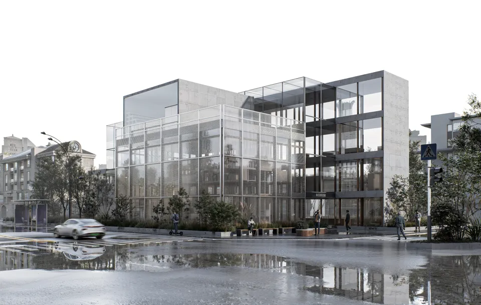
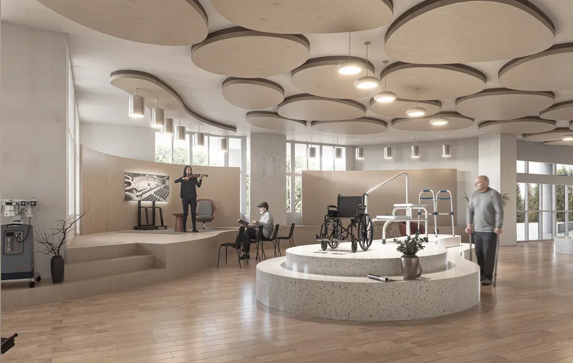

W-01 · 2021
Vision Art Gallery
視界美術館
Architecture as an experience of perception.
Individual academic designTainan, Taiwan
Academic design and residential project leadership—each one a source of inquiry.
Three individual academic designs and two projects from prior employment. None are RSA commissions, and none were analysed with RSA.
W-01 · 2021
視界美術館
Architecture as an experience of perception.

W-02 · 2020
角落圖書館
A place to pause, read and belong.

W-03 · 2020
相癒
Inclusive space for connection and wellbeing.

W-04 · 2022–2025
福田案 · 七戶透天住宅
Turning residential planning into built experience.

W-05 · 2024–
大同案 · 十五戶透天住宅
Residential scale, materials and urban context.